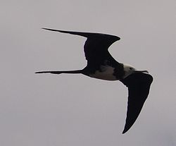
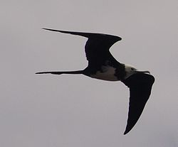

| Ascension Frigatebird | |
|---|---|
|  | |
| Conservation status | |
| Binomial name | |
| Fregata aquila (Linnaeus, 1758) |
| Ascension Frigatebird | |
|---|---|
|  | |
| Conservation status | |
| Binomial name | |
| Fregata aquila (Linnaeus, 1758) |
The Ascension Frigatebird (Fregata aquila) breeds only on the tiny Boatswain Bird Island just off Ascension Island in the tropical Atlantic Ocean. It formerly bred on the larger island, but was exterminated by introduced cats, Brown Rats, and human persecution.
It breeds on the rocky slopes of Boatswainbird. As with other frigatebirds its movements when not breeding are little known because of identification problems within this difficult group, but it occurs off west Africa.
A frigatebird found moribund in 1953 in Tiree, Scotland was identified at the time as Magnificent Frigatebird but was re-examined in 2002 and found to be an Ascension Frigatebird[citation needed].
It feeds on fish and similar surface prey such as small turtles.
This species is very similar to the other frigatebirds and is similarly sized to all but Lesser Frigatebird. It has a white axillary spur, and juveniles show a white head, and a distinctly white hind neck with no reddish-brown hue. It has a brown breast band.

{kind=link}